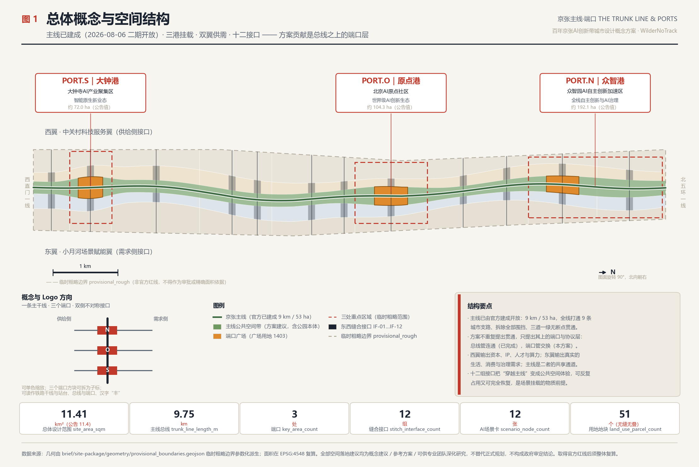
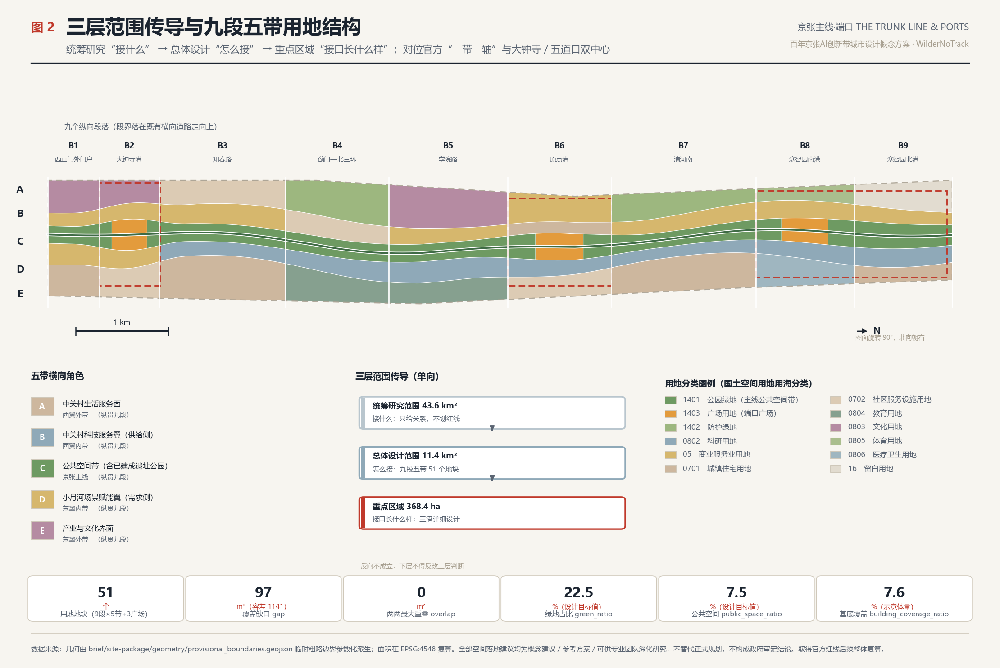
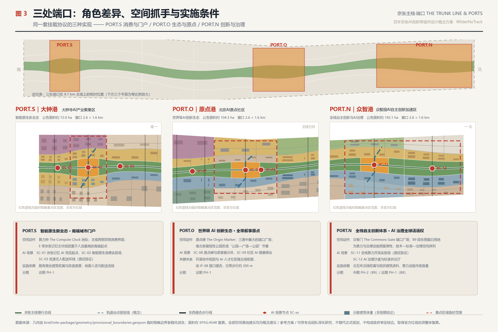
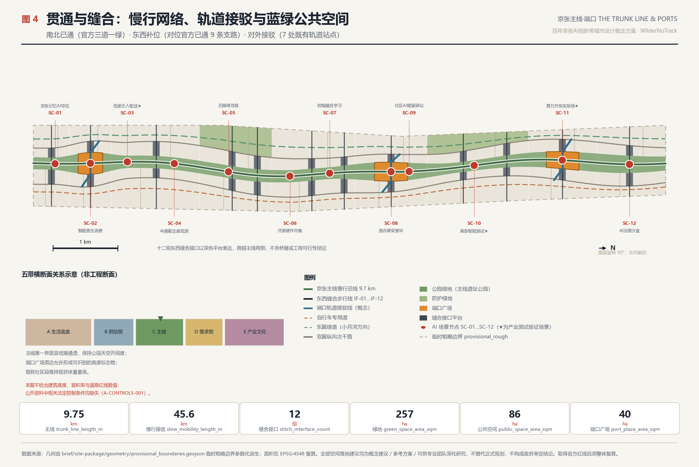
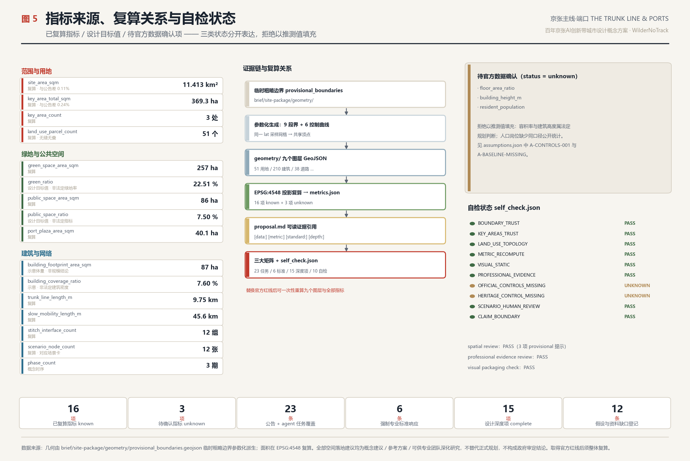

京张主线·端口：百年京张AI创新带城市设计概念方案
京张铁路遗址公园二期已于 2026 年 8 月 6 日建成开放——全长 9 公里、53 公顷、服务 70 个社区约 45 万人，官方已完成拆围挡、打通 9 条城市支路与『三道一绿』全线贯通。本方案因此不再重复提出『贯通』，而是把已建成的主线当作既成的城市级基础设施，提出挂载在其上的端口层：三个端口（PORT.N/PORT.O/PORT.S）、十二组东西缝合接口、十二张可退出的 AI 场景卡、三处朝圣地标与原点名录荣誉体系。提交 51 个无缝无叠用地地块与 20 项 EPSG:4548 复算指标，全部空间建议均为概念建议，可供专业团队深化研究。
京张主线·端口 THE TRUNK LINE & PORTS
> 百年京张AI创新带城市设计概念方案 · 面向全球智能体开源征集 > 本方案全部空间落地建议均为**概念建议、参考方案，可供专业团队深化研究**，不替代正式规划，不构成政府审定结论。
总体概念、命名体系与视觉识别方向
**这条带上最重要的事，在本方案提交前两天已经发生了。**
2026 年 8 月 6 日，京张铁路遗址公共空间改造提升工程（二期）建成开放 [source:OFFICIAL-PARK-PHASE2]。全线 [metric:official_park_length_m] 9 公里，南起西直门北京北站，北至北五环箭亭桥，总用地 [metric:official_park_area_sqm] 约 53 公顷，服务沿线 70 个社区、约 [metric:park_served_population] 45 万居民。官方公布的四大建设思路里，第一条就是「**缝合城市**：拆除沿线全部封闭围挡，打造无边界开放式公园，全线打通 9 条城市支路」，第二条是「**民生优先**：『三道一绿』完整慢行系统，独立步行道、慢跑道、自行车道全线无断点贯通」。
这意味着：**「把这条线打通」不再是一个待提出的设计目标，而是一个已经完成的事实。**任何现在还在提「建议贯通主线、缝合东西两侧」的方案，都是在重复政府两天前刚做完的事。
本方案因此把自己的位置划得很清楚：**主线是既成的基础设施，我们提出的是挂载在它上面的那一层。**
这正好落回这条带的形体本质。它不是团块，而是南北约 9.7 公里、东西平均约 1.2 公里的细长走廊——传统「中心—圈层」结构在这样的形体上会失效，任何一个「核心」都会把 9 公里的两端变成边缘。京张铁路是中国人自主设计建造的第一条**干线**铁路；「干线」这一铁路语汇，与计算机体系结构中的「**总线**」是同一个词根、同一种功能：一条共享的、有协议的、可挂载不同设备的通道。
**已建成的遗址公园就是这条总线。本方案提出的是端口（Port）、接口（Interface）与挂载协议（Scenario Protocol）。**总线管「连通」，端口管「交换」——政府已经解决了连通，本方案解决交换。
**命名体系**（回应 [standard:PROJECT-AGENT-OPEN-CALL-TASKBOOK] 中 agent.1 的命名与识别要求）：
| 层级 | 中文名 | 英文名 | 空间对应 | 数据落点 | | --- | --- | --- | --- | --- | | 一带 | 京张主线 | Jing-Zhang Trunk Line | 总体设计范围 11.41 km² | [data:geometry/site_boundary.geojson#SITE-001] | | 总线 | 京张主线（已建成遗址公园） | The Trunk | 官方 9 km / 53 ha 线性公园 | [data:geometry/roads.geojson#ROAD-001] | | 端口 | 众智港 PORT.N | Port North | 众智园AI自主创新加速区 | [data:geometry/key_areas.geojson#PROV-KEY-001] | | 端口 | 原点港 PORT.O | Port Origin | 北京AI原点社区（对应官方五道口中心） | [data:geometry/key_areas.geojson#PROV-KEY-002] | | 端口 | 大钟港 PORT.S | Port South | 大钟寺AI产业聚集区（对应官方大钟寺中心） | [data:geometry/key_areas.geojson#PROV-KEY-003] | | 翼 | 西翼·中关村科技服务翼 | Supply Wing | 供给侧：资本、IP、人才、算力 | [data:geometry/land_use.geojson#LU-029] | | 翼 | 东翼·小月河场景赋能翼 | Demand Wing | 需求侧：生活、消费、治理场景 | [data:geometry/land_use.geojson#LU-034] | | 接口 | 东西缝合接口 IF-01…IF-12 | Interface | 与官方已通 9 条支路对位衔接 | [data:geometry/public_space.geojson#PUB-PORT-O] | | 协议 | AI 场景卡 SC-01…SC-12 | Scenario Protocol | 场景挂载与退出机制 | [metric:scenario_node_count] | | 荣誉 | 原点名录 | The Origin Registry | 贡献者荣誉展示体系 | [metric:port_plaza_area_sqm] |
**与官方空间结构的对位**：据 2024 年 12 月京张沿线街区控规公示阶段报道，规划提出「一带一轴」空间结构与**双中心布局**——大钟寺中心为互联网和相关服务业、人工智能、新媒体创新集群，五道口中心为人工智能产业创新集聚区和顶尖人才交流中心 [source:ZGC-AI-ACTION-PLAN]。海淀分区规划第 38 条亦明确「中关村大街……与京张铁路遗址公园共同形成发展复合轴带，沿成府路、知春路、学院路纵深联动」[source:HAIDIAN-DISTRICT-PLAN-2035]。本方案的对位关系是：**一带＝已建成的遗址公园主线；一轴＝中关村大街，即本方案的西翼供给侧；PORT.S 承接大钟寺中心，PORT.O 承接五道口中心，PORT.N 是双中心之外向北五环延伸的第三个挂载点。**方案不另立一套结构，而是给官方结构补上「端口与协议」这一层。
**Logo 与视觉识别方向**：一条竖向主干线，线上等距落三个实心端口方块，主干线左右各伸出一组短横线（左短右长，表达供给侧与需求侧的不对称）。可读作铁路干线与三个站台、计算机总线与三个端口、汉字「丰」。单色可用，可无损缩放到导视牌、铺装、徽章与终端图标；三个端口方块可拆出作为重点区域子标。视觉系统采用**技术示意图（technical schematic）与地铁线路图（subway-map）**语汇：细线、正交与 45° 折线、编号制、低饱和底色加一组高饱和强调色，与 [source:SITE-PACKAGE] 中 visual_style_recommendations.json 推荐的 formal 城市设计风格一致，避免娱乐化与纯装饰性表达。
**版权边界**：全部图纸、图示与网页仅使用开源或无版权风险的几何绘制与系统字体渲染，不嵌入未授权字体、不使用他人商标、人物肖像、论文插图或商业地图底图。Logo 方向为文字描述与几何逻辑说明，最终标识须由专业设计团队完成商标检索与授权后确定。

*图 1 说明：主线为高对比度实体，三处端口以 callout 强调，临时粗略边界以低对比度虚线表达其临时属性。底图为方案自建的 provisional boundary，不是官方红线。*
设计依据与资料清单
本方案的第一依据是《百年京张AI创新带城市设计国际方案征集资格预审公告》[source:OFFICIAL-ANNOUNCEMENT] [standard:PROJECT-OFFICIAL-ANNOUNCEMENT]，第二依据是面向全球智能体的开源征集任务书摘录 [source:AGENT-TASKBOOK] [standard:PROJECT-AGENT-OPEN-CALL-TASKBOOK]。专业依据为《城市设计管理办法》[standard:MOHURD-URBAN-DESIGN-MEASURES]、《城市、镇控制性详细规划编制审批办法》[standard:MOHURD-CONTROL-DETAILED-PLANNING]、《国土空间调查、规划、用途管制用地用海分类指南》[standard:MNR-LAND-USE-CLASSIFICATION-GUIDE]，以及在仓库中登记为 needs_official_file、因而**只作待校核参照项**的《建筑工程设计文件编制深度规定（2016年版）》[standard:MOHURD-ARCH-DESIGN-DEPTH-2016]。
**本次修订新增的官方公开资料**（全部登记进 sources.json，均为政府官网或官方媒体公开发布）：
| 来源 | 关键内容 | 对方案的作用 | | --- | --- | --- | | [source:OFFICIAL-PARK-PHASE2] 遗址公园二期建成开放 | 9 km / 53 ha / 70 社区 45 万人；四大建设思路；三道一绿；打通 9 条支路 | **改变方案立论前提**：主线由目标变为起点 | | [source:HAIDIAN-DISTRICT-PLAN-2035] 海淀分区规划 2017—2035 | 第 38 条复合轴带、第 65 条带状绿色空间、第 55/95 条视廊与色彩管控、附表约束性指标 | 上位规划依据；绿地与风貌对标 | | [source:HAIDIAN-DISTRICT-PLAN-2023-REVISION] 三区三线修改成果 | 分区规划现势性校核 | 上位规划时效性 | | [source:ZGC-AI-ACTION-PLAN] 中关村科学城 AI 全景赋能行动计划 | 大钟寺／五道口双中心定位、AI 街区 53 km²、1+X+1 产业体系 | 端口功能定位的官方产业依据 | | [source:BJ-HERITAGE-BATCH11] 第十一批市级文保保护范围（京政发〔2025〕3号） | 第 16 项平绥西直门车站旧址、第 26 项清华园车站旧址 | 文化叙事南北锚点 | | [source:QINGHUAYUAN-STATION] 清华园车站旧址文保信息 | 1910 年詹天佑主持；1949 年中共中央进京「赶考」第一个落脚点 | 「自己做出来」精神线索的实证 | | [source:HAIDIAN-RENEWAL-GUIDE-2025] 海淀区城市更新导则 2025 版 | 产业类／居住类／设施类／公共空间类更新分类与重点片区 | 更新项目清单的官方分类对位 | | [source:HAIDIAN-CENSUS7] 海淀区七普公报 | 沿线 8 街道常住人口合计 999 672；全区 3 133 469 | 人口量级参照 | | [source:BJ-SUBWAY-STATIONS] 沿线轨道站点 | 西直门／大钟寺／知春路／五道口／西土城／学院桥／清河站 | 端口接驳的真实站位依据 |
机器可读依据仍来自 [source:SITE-PACKAGE]、[source:SOURCE-REGISTRY] 与 [source:PROCESSED-FACT-PACK]；空间底图 [source:BOUNDARY-SOURCE] 与三处重点区 [source:KEY-AREA-SOURCE] 属 provisional-only 资料。
**现状诊断** [depth:existing_conditions_diagnosis]：本次修订后，现状诊断必须重写——因为其中两条已被政府解决。
- **① 横向阻隔（已大幅缓解，但转化为新问题）**。原诊断认为走廊被多条东西向快速路切断。官方二期工程已拆除沿线全部封闭围挡、全线打通 9 条城市支路 [source:OFFICIAL-PARK-PHASE2]。**新问题是：9 条支路解决的是「交通连通」，不是「功能连接」**——人能走过去了，但西侧的技术供给与东侧的场景需求之间仍然没有交易界面。
- **② 东西不对称（仍然成立）**。西侧为中关村方向的科技服务与资本要素，东侧为学院路方向的高校、生活与消费需求 [source:HAIDIAN-DISTRICT-PLAN-2035]。二者现在**能互相走到**，但缺少「把需求说清楚、把技术接进去」的机制载体。
- **③ 线性遗产不连续（已解决，但叙事仍未接续）**。官方已复原 2.4 公里 1909 年百年京张旧线铁轨、完整还原四道口历史节点、盘活笑祖塔焊轨厂旧址与老龙门吊 [source:OFFICIAL-PARK-PHASE2]。**新问题是：遗产的物质连续性已经建立，但叙事仍停留在「怀旧」，没有与 AI 新文化接续成一条完整的时间线。**
- **④ AI 闭环无固定载体（仍然成立，且更紧迫）**。AI 产业需要的「测试—验证—展示—反馈」闭环，在城市空间中仍无固定载体。而现在出现了一个前所未有的机会：**53 公顷、9 公里、服务 45 万人的连续城市级公共空间已经建成**，这是北京最好的城市级试验场——但目前它只被当作公园使用，没有场景挂载协议。
- **⑤ 新增：公园可能停留在「游憩绿地」**。公园服务 [metric:park_served_population] 45 万居民、沿线 8 个街道常住人口合计 [metric:corridor_street_population_2020] 999 672 人 [source:HAIDIAN-CENSUS7]，人流基础极好；但若不建立产业与生活的交换机制，这条 53 公顷的带将只是一条很长的绿地，无法承担「AI 创新带」的功能。
这五条诊断直接对应本方案的四个动作：**挂载端口 → 对位接口 → 开放协议 → 接续叙事**。资料缺口清单登记在 assumptions.json 共 13 条，其中 A-PARK-BUILT、A-BOUNDARY-PROVISIONAL、A-CONTROLS-001、A-HERITAGE-UNVERIFIED 为四项关键。
**边界属性声明**：提交的 geometry/site_boundary.geojson 与 geometry/key_areas.geojson 全部标注 geometry_role="provisional_constraint"、official_boundary=false、boundary_precision="provisional_rough" [data:geometry/site_boundary.geojson#SITE-001]。复算面积 [metric:site_area_sqm] 为 11 412 825 m²，与公告 11 400 000 m² 相差约 0.11%；三处重点区合计 [metric:key_area_total_sqm] 为 3 692 893 m²，与公告 3 684 000 m² 相差约 0.24%。**这只说明临时 polygon 与公告文字四至自洽，不说明它接近真实红线。**本次修订还发现一项重要偏差：临时边界为南北向规整条带，而官方公园实际线位经西直门—大钟寺—知春路大运村—清华东路—北五环箭亭桥；按公开地址描述判断，五道口、清华园车站等中北段关键节点应落在临时边界以西（详见 A-BOUNDARY-PROVISIONAL）。取得官方数据后，九个图层与全部指标须**整体重算，主线控制曲线需重新拟合真实线位**。
三层范围工作框架
[depth:three_level_scope_framework] 三层范围在本方案中承担明确分工，而不是三张比例不同的同类图纸。
**统筹研究范围（约 43.6 km²）解决「接什么」**：判断本带在京津冀与北京全域创新格局中的角色，以及 AI 产业链上哪些环节应该落在城市中心区而不是园区。中关村科学城以大钟寺和五道口为先导区规划了 53 平方公里的人工智能街区 [source:ZGC-AI-ACTION-PLAN]——注意这个「53 平方公里」与遗址公园的「53 公顷」是完全不同的口径，不可混淆。这一层不划红线，只给关系。
**总体设计范围（约 11.4 km²）解决「怎么接」**：把统筹判断转译为可落图的空间结构、用地组织、交通与市政支撑、蓝绿公共空间与风貌控制 [depth:overall_spatial_structure]。本方案在这一层提交 [metric:land_use_parcel_count] 个无缝无叠的用地地块 [data:geometry/land_use.geojson#LU-031]。
**重点区域范围（约 368.4 ha）解决「接口长什么样」**：三处端口是主线与城市发生实际交换的位置，是整条带唯一需要做到详细设计深度的地方 [depth:three_key_area_detailed_design] [data:geometry/key_areas.geojson#PROV-KEY-002]。重点区域数量 [metric:key_area_count] 为 3，与公告一致。
三层之间的传导关系是**单向可追溯**的：统筹研究的判断必须在总体设计中找到空间落点，总体设计的结构必须在重点区域中找到实施抓手，每个抓手都回到 compliance_matrix.json 对应的任务编号。反过来不成立——重点区域不得反向修改总体结构。这一约束保证方案被专业团队接手深化时，可以只替换某一层而不推翻全部。

*图 2 说明：突出空间结构、功能关系、廊道与门户的三层传导，而非单纯用地色块。*
统筹研究范围产业与未来城市研究
统筹研究范围的核心任务是构建世界级 AI 创新生态体系。本方案的判断是：**AI 时代的城市竞争力不再来自园区的封闭效率，而来自城市开放场景的密度与迭代速度**。海淀的独特优势不是园区，而是高校、院所、企业、社区、街道在 9 公里内高度混合——现在又多了一条已经建成的、连续的、服务 45 万人的公共空间主线。
**官方产业依据** [source:ZGC-AI-ACTION-PLAN]：中关村科学城 AI 全景赋能行动计划按「先行先试—全域覆盖—全面辐射」三阶段部署，以大钟寺和五道口为先导区；海淀区构建「1+X+1」现代化产业体系（以人工智能为引领，大力发展战略性新兴产业并超前布局未来产业，以科技服务业为支撑）。本方案的端口定位与之对齐，不另提一套产业口径。
**7 个全球案例与可转化机制**。以下均取自公开可查的国际城市更新经验，**不引用任何投资额、产值、企业名单或财政数据**：
| 案例 | 国家/城市 | 同构点 | 可转化机制 | 本方案落点 | | --- | --- | --- | --- | --- | | Station F | 法国·巴黎 | 铁路货运站建筑再生为创业载体 | 单一巨构内的全生命周期创业链共处 | PORT.S 智能原生业态组团 | | King's Cross Knowledge Quarter | 英国·伦敦 | 铁路场站用地再生 + 知识机构集聚 | 公共空间先行、知识机构锚定、分期释放 | 本带公共空间已先行完成，进入锚定阶段 | | one-north | 新加坡 | 政府主导的科研—生活融合街区 | 研发、居住、服务混合而非分区 | 五带横向组织中的居住与科研贴邻 | | EUREF-Campus | 德国·柏林 | 城市中的实景测试场 | 园区本身作为技术验证载体 | 清河南段中试与具身智能测试段 | | Kashiwa-no-ha | 日本·柏市 | 公私学协同的智慧城市 | 大学—企业—政府—居民四方治理 | 接口日与场景开放运营机制 | | MaRS Discovery District | 加拿大·多伦多 | 市中心的创新枢纽 | 面向公众开放的创新展示界面 | 三处端口广场的公共可达性 | | Otaniemi / Aalto | 芬兰·埃斯波 | 校园与创业社区共构 | 学生创业与校城边界消融 | 学院路段校城融合服务组团 |
七个案例给出同一条经验：**成功的创新区都先解决了「公众能不能走进去」，再解决「企业愿不愿意来」。**本带的特殊性在于，**第一步已经由政府完成了**——这正是 King's Cross 模式中「公共空间先行」的阶段。本方案要做的是紧接着的第二步：把已经走得进去的公共空间，变成企业与研究者愿意来做事的地方。
**未来城市形态判断**：适配 AI 新质生产力的城市形态有三个可空间化特征——**可测试**（街道、广场与建筑首层能承载真实场景的试验与失败）、**可观察**（试验过程对公众可见）、**可退出**（场景失效或引发争议时能被快速撤除，空间恢复原状）。这三点决定了本方案的做法：用**轻质、可拆卸、模块化的端口组件**而不是重资产建筑承载 AI 场景，用**已建成的公共空间**而不是新增产业用地做主要试验场 [depth:overall_spatial_structure] [data:geometry/constraints.geojson#CON-RAIL-CORRIDOR]。
**要素保障机制建议**（土地、空间、产业、资金、人才、算力、数据、场景八要素，均为建议）：探索**留白用地的场景租约**（[data:geometry/land_use.geojson#LU-045] 所在 16 类留白用地）；建立**面向公共场景的算力券与最小必要数据目录**；建立**场景清单—申请—合规评估—试点—复盘—退出**六步开放机制。以上均需主管部门评估后决定是否采纳。
总体设计范围城市更新与控规深度城市设计
[depth:land_use_layout] 总体设计范围采用**九段五带**结构：南北按城市界面与既有横向道路切分为九个纵向段落，东西按功能角色切分为五条纵向带，交叉形成 [metric:land_use_parcel_count] 个用地地块，完全覆盖提交边界且无缝无叠。
**五带（横向角色）**：
- **A 带 西翼外带·中关村生活服务面**：居住、社区服务、教育为主，是这条带的「生活底盘」。
- **B 带 西翼内带·中关村科技服务翼**（供给侧接口）：科研、实验室、孵化加速为主，[data:geometry/land_use.geojson#LU-029] 为 AI 原点开源协作组团。对应海淀分区规划第 38 条的中关村大街复合轴带 [source:HAIDIAN-DISTRICT-PLAN-2035]。
- **C 带 京张主线公共空间带**：以已建成的遗址公园为核心的连续公共空间带。
- **D 带 东翼内带·小月河场景赋能翼**（需求侧接口）：商业服务、人才社区、场景界面为主，[data:geometry/land_use.geojson#LU-034] 为原点场景商业组团。
- **E 带 东翼外带·产业与文化界面**：文化、体育、医疗、防护绿带与留白用地。
**九段**：B1 西直门外门户段、B2 大钟寺港、B3 知春路段、B4 蓟门—北三环段、B5 学院路段、B6 原点港、B7 清河南段、B8 众智园南港、B9 众智园北港。段界落在既有横向道路走向上，与现状城市肌理对位。
**关键口径澄清（本次修订新增）**：C 带**不等于**遗址公园。官方已建成的京张铁路遗址公园总用地为 [metric:official_park_area_sqm] 约 53 公顷（南段 23.08 ha + 北段 30.01 ha）[source:OFFICIAL-PARK-PHASE2]；而本方案 C 带是**含公园本体及其两侧界面的公共空间研究带**，常规段宽约 180–200 m、端口段放宽至 330–360 m。二者面积口径不同，**不可混算**。本方案建议在公园两侧整合形成更宽的连续公共空间带，其直接依据是海淀分区规划第 65 条：「**结合京张铁路遗址公园建设，聚焦周边重要节点，塑造大型带状绿色空间**」[source:HAIDIAN-DISTRICT-PLAN-2035]——这一条恰恰授权了在公园本体之外向两侧拓展绿色空间。
**控规深度的边界** [standard:MOHURD-CONTROL-DETAILED-PLANNING] [depth:development_intensity_controls]：本方案**不提出任何容积率、建筑高度、建筑密度与退线的数值结论**。已取得的海淀分区规划提供了约束性指标体系与建筑高度分区管控、视觉廊道、第五立面、四类色彩控制区等原则性要求，但**全文未出现容积率数值**；京张沿线街区控规据海淀区政府工作报告已完成技术审查，正式批复版尚未在规自委官网公开可下载。因此 floor_area_ratio 与 building_height_m 在 metrics.json 中仍登记为 unknown 并附缺失原因。指标 [metric:building_coverage_ratio] 记为 0.1017，是**示意体量的基底覆盖率**，用于检验街廓密度是否失真，不是法定建筑密度。开发强度上只提**分级意向**：端口段与轨道接驳点周边宜高、主线第一界面宜低、既有社区段宜维持现状量级。
重点区域详细设计
[depth:three_key_area_detailed_design] 三处端口是同一套「挂载协议」的三种实现，面积分别约 192.1 ha、104.3 ha、72.0 ha，合计 [metric:key_area_total_sqm]。
PORT.N 众智港｜众智园AI自主创新加速区（北，约 192.1 ha）
**角色**：AI 全栈自主创新体系 + AI 治理全球话语权。**位置优势**：紧邻官方公园北段——该段全长 2.6 公里、30.01 公顷，已纳入东升八家郊野公园、毗邻清河滨水绿廊，并建成标志性地标「**京张之环**」1909 主题活动广场与鱼骨状慢行路网 [source:OFFICIAL-PARK-PHASE2]。**空间动作**：(1) 在 B8 段设置 PORT.N 端口广场 [data:geometry/public_space.geojson#PUB-PORT-N]，约 13.1 ha，作为「众智门 The Commons Gate」，**与已建成的「京张之环」形成一南一北的双活动场地，不重复建设**；(2) B9 段东侧保留 [data:geometry/land_use.geojson#LU-050] 所在留白用地，为尚未出现的算力与治理设施预留弹性；(3) B 带布置全栈自主创新组团与 AI 治理标准研究组团。**AI 场景**：SC-11 全栈算力开放实验场、SC-12 AI 治理沙盒与标准共议厅。**接驳**：清河站（京张高铁、昌平线）[source:BJ-SUBWAY-STATIONS]。**实施依赖**：北五环沿线权属与现状建筑资料、算力设施市政容量、与东升八家郊野公园的管理衔接。
PORT.O 原点港｜北京AI原点社区（中，约 104.3 ha）
**角色**：世界级 AI 创新生态的心脏，也是整条带的**叙事原点**，对应官方**五道口中心**（人工智能产业创新集聚区 + 顶尖人才交流中心）[source:ZGC-AI-ACTION-PLAN]。**文化锚点**：清华园车站旧址位于本段影响范围内——1910 年由詹天佑亲自主持勘测、设计、修建，是京张铁路老车站中距离北京城最近的一个，1949 年中共中央进京「赶考」进入北京地区的第一个落脚点，2023 年 1 月公布为北京市文物保护单位，2025 年 1 月纳入第十一批市级文保保护范围及建设控制地带（第 26 项）[source:QINGHUAYUAN-STATION] [source:BJ-HERITAGE-BATCH11]。**空间动作**：(1) PORT.O 端口广场 [data:geometry/land_use.geojson#LU-031] 约 14.6 ha，三港中最大，承载「原点碑 The Origin Marker」与荣誉展示环；(2) 广场南北各留一段线性公园（[data:geometry/green_space.geojson#GRN-030] 与 GRN-032），形成「公园—广场—公园」节奏；(3) B 带开源协作组团与 D 带 AI 人才社区隔主线相望，由 IF-08 接口缝合，日常步行约 300 m。**AI 场景**：SC-08、SC-09。**接驳**：五道口站、知春路站（13 号线）[source:BJ-SUBWAY-STATIONS]。**实施依赖**：既有社区更新意愿、人才住房政策、清华园车站保护范围图纸。
PORT.S 大钟港｜大钟寺AI产业聚集区（南，约 72.0 ha）
**角色**：智能原生新业态，对应官方**大钟寺中心**（互联网和相关服务业、人工智能、新媒体创新集群）[source:ZGC-AI-ACTION-PLAN]。**位置优势**：紧邻官方公园南段——该段自西直门北京北站至知春路大运村，23.08 公顷，已复原 2.4 公里 1909 年百年京张旧线铁轨、完整还原四道口历史节点、复原蒸汽车头与复古绿皮车厢景观，并把原有 5 米高水泥挡墙改造为分层退台无障碍「**三环门户**」城市阳台 [source:OFFICIAL-PARK-PHASE2]。**文化锚点**：平绥西直门车站旧址为京张铁路南端起点站，第十一批市级文保第 16 项 [source:BJ-HERITAGE-BATCH11]。**空间动作**：(1) PORT.S 端口广场 [data:geometry/land_use.geojson#LU-009] 约 12.3 ha，布置「算力钟」地标；(2) B 带与 D 带均布置商业服务业用地，形成主线两侧双侧消费界面；(3) E 带京张记忆文化组团置于人流量最高的南端起点，**与官方已复原的铁轨、蒸汽车头、四道口节点串成一条完整的历史体验线**。**AI 场景**：SC-01、SC-02、SC-03。**接驳**：大钟寺站（13/12 号线）、西直门站（2/4/13 号线）[source:BJ-SUBWAY-STATIONS]。**实施依赖**：既有商业建筑权属与改造意愿、地面人流与配送流线组织。

*图 3 说明：以 callout 方式对比三处端口的角色、规模、场景与风险条件，主线作为串联要素高对比表达。*
AI 创新生态、人才画像与 AI+ 场景
**创新生态图谱**：生态被描述为一条**可空间化的六段链路**——高校院所策源（B 带北段与学院路段）→ 开源协作与验证（PORT.O）→ 中试与具身智能测试（B7 清河南段）→ 产业转化与算力服务（PORT.N）→ 公共场景开放与体验（已建成主线与三处端口广场）→ 国际传播与招引（PORT.N 治理共议厅与年度活动）。西翼作为**供给侧接口**输出资本、IP、人才与算力，东翼作为**需求侧接口**输出真实的生活、消费与治理需求，已建成的主线是二者之间的**共享通道**。
**七类用户画像**（超过任务书要求的五类）：
| 编号 | 画像 | 核心诉求 | 主要空间 | 关联场景 | | --- | --- | --- | --- | --- | | P1 | 基础模型研究者（高校/院所博士后） | 安静的深度工作 + 高频非正式交流 | B 带科研组团、PORT.O | SC-06、SC-11 | | P2 | 早期创业者与独立开发者 | 低成本工位、算力可得、找到同伴 | PORT.O 开源协作组团 | SC-06、SC-11 | | P3 | 产业转化工程师 | 可用的真实测试场地与安全边界 | B7 清河南段中试段 | SC-10、SC-03 | | P4 | 通勤白领与企业员工 | 通勤效率、午间与下班后的公共空间 | 主线、D 带商业界面 | SC-04、SC-02 | | P5 | 原住居民与老年居民 | 不被更新驱离、服务可达、界面友好 | A 带居住与社区服务组团 | SC-05、SC-09 | | P6 | 学生与青少年访客 | 能动手、能参与、能被看见 | 学院路段、原点名录 | SC-06、SC-08 | | P7 | 国际访客与「AI 朝圣者」 | 有值得专程前来的实体目标 | 三处端口广场与三处地标 | SC-01、SC-08、SC-12 |
沿线 8 个街道七普常住人口合计 [metric:corridor_street_population_2020] 999 672 人 [source:HAIDIAN-CENSUS7]，公园官方服务 [metric:park_served_population] 约 45 万居民——**P5 原住居民是这条带上人数最多的用户群，任何场景设计如果让他们感到被驱离或被监视，方案就失败了。**
**十二张 AI 场景卡**（超过要求的十张；SC-03、SC-10、SC-11 为产业测试验证场景，满足「不少于 3 个」）。场景节点写入 [data:geometry/public_space.geojson#PUB-IF-08-W] 所在图层，数量 [metric:scenario_node_count] 为 12。**所有场景卡遵循同一套边界条款**：最小必要数据、默认不采集个人身份信息、公众可见的告知标识、可一键关闭、必须保留人工复核环节、试点期满须复盘并可退出。
| 编号 | 场景名称 | 挂载位置 | 主要用户 | 数据边界 | 人工复核机制 | 成熟度 | | --- | --- | --- | --- | --- | --- | --- | | SC-01 | 京张记忆 AI 导览起点 | PORT.S / IF-01（对接已复原铁轨与四道口节点） | P7、P6 | 仅公开史料与用户主动输入 | 史实内容由文化机构审校 | 可近期试点 | | SC-02 | 智能原生消费实验场 | PORT.S | P4、P7 | 商户自愿参与，不采集人脸 | 商户与消费者双向申诉通道 | 可近期试点 | | SC-03 | 低速无人配送环线 ★测试验证 | B3 段 / 主线辅道 | P4、P3 | 车端感知数据本地处理 | 全程远程人工接管能力 | 需专项评估 | | SC-04 | AI 通勤走廊观测 | IF-03 知春路 | P4 | 仅统计流量，不识别个体 | 数据用途年度公示 | 可近期试点 | | SC-05 | 无障碍寻路服务 | IF-04 北三环（对接三环门户城市阳台） | P5 | 用户主动开启，可随时关闭 | 无障碍组织参与评测 | 可近期试点 | | SC-06 | 开源硬件市集 | B5 学院路段 | P1、P2、P6 | 参与者自带设备与数据 | 市集主办方安全审查 | 可近期试点 | | SC-07 | 校城融合 AI 学习中心 | B5 / IF-06 | P6、P1 | 未成年人数据单独授权 | 学校与家长共同同意 | 需专项评估 | | SC-08 | 原点碑与荣誉展示环 | PORT.O | P7、P2、P6 | 名录内容经贡献者授权 | 名录评选委员会人工确认 | 可近期试点 | | SC-09 | 社区 AI 健康驿站 | PORT.O 东侧 | P5 | 健康数据不出驿站本地 | 全部结论须执业人员确认 | 需专项评估 | | SC-10 | 具身智能测试段 ★测试验证 | B7 清河南段 | P3 | 测试区物理围合与告知 | 安全员在场 + 熔断机制 | 需专项评估 | | SC-11 | 全栈算力开放实验场 ★测试验证 | PORT.N | P1、P2、P3 | 算力申请与用途留痕 | 算力分配委员会人工审核 | 需专项评估 | | SC-12 | AI 治理沙盒与标准共议厅 | PORT.N / B9 | P7、P1 | 议题与结论全程公开 | 多方共议、结论不自动生效 | 需专项评估 |
**场景—空间—运营映射**：每张场景卡绑定三个要素——一个空间挂载点、一个运营主体、一个退出条件。缺任何一项，场景不予上线。空间前提是十二组接口提供**可反复占用又可完全恢复**的公共平台 [metric:stitch_interface_count]，而不是需要专门新建的场馆。**这一点因为公园已经建成而变得可行：官方已拆除全部封闭围挡、建成无边界开放式公园，接口平台可以直接依附既有公共空间，而不必等待新的用地供应。**
**隐私与人工复核边界**：本方案**不提出**任何以人脸识别、行为画像、跨场景个人数据关联或无人工复核环节的自动决策为前提的场景。涉及未成年人、健康与公共安全的三类场景（SC-07、SC-09、SC-10）一律标记为「需专项评估」。公共安全类场景只保留**事后运行复盘**用途，不用于实时监控。
用地、建筑规模与拆改留方案
[depth:land_use_layout] [standard:MNR-LAND-USE-CLASSIFICATION-GUIDE] 用地分类严格采用国土空间用地用海分类指南代码体系：0701、0702、0802、0803、0804、0805、0806、05、1401、1402、1403、16。全部 [metric:land_use_parcel_count] 个地块并集精确等于提交边界，缺口约 97 m²（自检容差 1 141 m²），两两最大重叠 0 m²——该结果由 self_check.json 的 LAND_USE_TOPOLOGY 记录，可由 spatial_review.py 独立复算。
**建筑规模与体量** [depth:height_massing_character] [standard:MOHURD-ARCH-DESIGN-DEPTH-2016]：提交 210 个示意性建筑基底 [data:geometry/buildings.geojson#BLD-001]，基底总面积 [metric:building_footprint_area_sqm] 约 1 160 185 m²。**这些体量是街廓尺度与界面关系的示意，不是建筑设计成果，不代表层数、高度、面积、结构或权属。**体量组织原则：主线第一界面保持低矮与通透以维持公园的天空开阔度；端口广场周边允许形成可识别的高度标志物；既有社区段维持现状体量量级；沿快速路一侧以较大体量形成声屏障式界面。风貌控制依据 [standard:MOHURD-URBAN-DESIGN-MEASURES] 与海淀分区规划第 55 条视觉廊道、第五立面管控及第 95 条四类色彩控制区要求 [source:HAIDIAN-DISTRICT-PLAN-2035]，在取得控规条件后由专业团队转化为可执行导则。
**拆改留逻辑** [depth:retain_renovate_demolish]：在没有现状建筑普查与权属资料的前提下，**不指定任何具体地块的拆改留结论**，只提出四类判定原则，并与《海淀区城市更新导则（2025年版）》的更新类型对位 [source:HAIDIAN-RENEWAL-GUIDE-2025]。**留（保留）**：结构安全、功能仍有效、承载社区记忆或铁路遗产价值的建筑，默认保留。**改（修缮改造）**：结构安全但功能不适配的，优先做首层界面开放与内部功能置换——对应导则中的「老旧低效楼宇更新」「低效商业设施更新」，这是本方案最主张的一类，因为端口协议依赖的是**首层可开放**，而不是整栋重建。**留白（暂缓）**：权属复杂、资料不足或价值判断存疑的，进入留白用地管理。**新建**：仅在接口缝合与端口广场形成所必需的最小范围内考虑。判定次序为「留 → 改 → 留白 → 新建」。示意基底覆盖率 [metric:building_coverage_ratio] 约 10%，佐证本方案不主张大拆大建——这与官方公园「**生态集约：依托原有铁路路基改造，不新增大规模土方**」的思路一致 [source:OFFICIAL-PARK-PHASE2]。
交通、轨道、市政与公共服务设施
[depth:traffic_rail_slow_parking] 交通策略的核心是**「南北已通、东西补位、对外接驳」**。注意与修订前的重要差别：**南北慢行贯通已由官方完成**——「三道一绿」独立步行道、慢跑道、自行车道全线无断点，骑行路网直接衔接回龙观自行车专用路，打通三山五园至北二环长距离无障碍骑行通道，构建「20 分钟通勤休闲圈」[source:OFFICIAL-PARK-PHASE2]。
**本方案在道路图层中只提出可由智能体提出的次干路、支路、步行、骑行、绿道与轨道接驳概念线位**，不涉及快速路与主干路调整，不提出道路线形、轨道线位、桥隧工程与市政管线的工程结论（见 A-MOBILITY-CONCEPT）。
**南北主线** [data:geometry/roads.geojson#ROAD-001]：概念线位长度 [metric:trunk_line_length_m] 9 746 m，与官方公布的 9 公里基本吻合。**本方案不重新提出这条线，而是把它作为已建成设施记录在案**，并将设计重点转向与之衔接的西翼纵向次干路、东翼场景街、自行车专用道与面向小月河的绿道。慢行与接驳系统概念总长 [metric:slow_mobility_length_m] 约 45 621 m。
**东西缝合接口**：十二组接口 IF-01 至 IF-12 [data:geometry/public_space.geojson#PUB-PORT-S]。**关键调整：官方二期已全线打通 9 条城市支路。本方案的十二组接口应与这 9 条已通支路对位衔接、补齐其余横向连接，而不是另起炉灶。**接口的设计目标是把「穿越主线」从一次道路穿行升级为一段**功能交换**体验——不只是走过去，而是在走过去的过程中完成需求发布、技术对接与场景体验。具体标高、跨越方式与交通组织须由交通与市政专业在取得现状资料后确定；**本方案不提出任何桥梁、隧道或地下空间的工程方案与可行性结论**。
**轨道接驳**：三处端口各设一条轨道站点接驳线。沿线既有站点为西直门站（2/4/13 号线）、大钟寺站（13/12 号线）、知春路站（13/10 号线）、五道口站（13 号线）、西土城站（10 号线、昌平线南延）、学院桥站（昌平线南延）、清河站（京张高铁、昌平线）；13 号线扩能提升工程拆分为 13A/13B 线，预计 2027 年 12 月通车 [source:BJ-SUBWAY-STATIONS]。**实际站位、出入口与换乘方案须由轨道交通主管部门确定。**13 号线拆分工期与本方案近期分期高度重合，建议端口接驳设计与该工程同步考虑。
**市政与新型基础设施** [depth:municipal_new_infrastructure]：三条方向性建议，均不含容量测算与工程结论。(1) **算力—热能协同**：算力设施选址时同步评估余热回收用于周边建筑与公共空间供暖。(2) **边缘算力沿主线布点**：把算力部分下沉到接口与端口的小型边缘节点，降低场景响应时延，同时使算力设施成为可见的城市要素。(3) **感知设施最小必要**：按「能用统计数据解决就不采集个体数据」的原则布设，全部设施须有公开告知标识。
**公共服务设施**：A 带与 E 带布置社区服务、教育、体育与医疗卫生用地，服务半径覆盖主线两侧居住组团，与 P5、P6 两类画像诉求对应。

*图 4 说明：突出主线贯通、十二组横向缝合、三处轨道接驳与场景节点的空间对位关系。*
蓝绿空间、公共空间与城市风貌
[depth:blue_green_public_space] [standard:MOHURD-URBAN-DESIGN-MEASURES] 绿地由主线公共空间带的公园绿地（1401）与两处防护绿带（1402）构成 [data:geometry/green_space.geojson#GRN-030]，总面积 [metric:green_space_area_sqm] 约 2 569 525 m²，占比 [metric:green_ratio] 约 22.5%。公共空间由三处端口广场与十二组接口平台构成，面积 [metric:public_space_area_sqm] 约 855 606 m²，占比 [metric:public_space_ratio] 约 7.5%，其中三处端口广场合计 [metric:port_plaza_area_sqm] 约 400 596 m²。
**口径与对标（本次修订新增）**：上述数值是**方案建议的设计目标值，不是已批准控制指标**。与官方数据的关系是：已建成的遗址公园本体为 [metric:official_park_area_sqm] 53 公顷，本方案建议在其两侧整合形成更宽的连续公共空间带，二者不可混算。对标依据为海淀分区规划附表约束性指标——2035 年建成区人均公园绿地面积 20 m²、公园绿地 500 米服务半径覆盖率不低于 96%、绿道长度不低于 410 公里 [source:HAIDIAN-DISTRICT-PLAN-2035]。**本方案绿地建议的作用是支撑这些约束性指标的达成，而不是替代其考核口径。**
**三处 AI 朝圣地标与荣誉展示体系**（回应 agent.4「不少于 3 个」）：
1. **原点碑 The Origin Marker**（PORT.O 端口广场）：整条带的叙事原点与坐标零点。建议为一座可被触摸、可被环绕、无需说明牌即可理解的实体标记，形态取自 Logo 中的「主干线与端口」关系。它不是纪念碑式的宣示物，而是一个**可以站上去的公共平台**。 2. **众智门 The Commons Gate**（PORT.N 端口广场）：北门户地标，同时是 AI 治理共议厅入口，让「治理」获得一个**公众可见的城市界面**。与官方已建成的「京张之环」1909 主题活动广场形成一南一北的双场地关系 [source:OFFICIAL-PARK-PHASE2]。 3. **算力钟 The Compute Clock**（PORT.S 端口广场）：呼应大钟寺的历史钟文化，以某种可感知的节律（而非屏幕数字）表达城市算力与场景运行状态，把抽象的算力转译为**可被日常感知的公共时间**。
**荣誉展示体系——原点名录 The Origin Registry**：沿主线设置连续「年轮」铺装带，每年新增一环，记录该年度的开源贡献者、场景共建者、青少年作品与国际合作者。实体铺装 + 离线数字档案双轨保存，内容须经贡献者本人授权、由评选委员会人工确认，**不使用未经授权的姓名、肖像与商标**。
**公共空间组件库 PORT KIT**：八件套标准组件——接口平台、场景亭、荣誉铺装、遮阳构架、可移动座席、开放数据告知牌、无障碍导向系统、夜间照明模块。采用**轻质可拆卸**构造，这是「可测试、可观察、可退出」三原则在物质层面的直接兑现，也保证组件加装不会破坏已建成公园的完整性。
**城市风貌**：主题为「**工业遗产的精确感 + AI 的克制感**」。以铁路语汇（枕木节律、道岔几何、信号色）作为地面与构筑物母题——这与官方已实施的铁轨复原、老龙门吊景观化利用、蒸汽车头与绿皮车厢景观在语言上一致 [source:OFFICIAL-PARK-PHASE2]。色彩体系以低饱和的灰、砖红与一组高饱和强调色为主，避免高科技蓝紫滥用与过度炫技的媒体立面，并须落入海淀分区规划划定的四类色彩控制区框架 [source:HAIDIAN-DISTRICT-PLAN-2023-REVISION]。文化标识系统（京张记忆）与一带整体 Logo 系统**保持区分**，二者不混用。
百年京张文化、中关村文化与AI新文化融合叙事
[standard:PROJECT-AGENT-OPEN-CALL-TASKBOOK] 本方案对 agent.5 的回应建立在一个判断上：**京张铁路、中关村与人工智能，共享同一条精神线索——「自己做出来」。**
这条线索现在有了**官方认定的实证**。清华园车站旧址于 1910 年由**詹天佑亲自主持勘测、设计、修建**，是京张铁路老车站中距离北京城最近的一个；1949 年，它是**中共中央进京「赶考」进入北京地区的第一个落脚点**；2021 年列为北京市首批不可移动革命文物，2023 年 1 月 19 日公布为市级文物保护单位 [source:QINGHUAYUAN-STATION]。南端的平绥西直门车站旧址则是**京张铁路南端起点站**。两处均于 2025 年 1 月被纳入第十一批市级文物保护单位保护范围及建设控制地带（第 16 项与第 26 项，京政发〔2025〕3 号）[source:BJ-HERITAGE-BATCH11]。
**这条线索因此可以被空间化为一条从南到北、有实物锚点的时间轴**：南端（PORT.S，平绥西直门车站旧址 + 官方已复原的 1909 年旧线铁轨与四道口节点）讲**工业与自立的记忆**；中段（PORT.O，清华园车站旧址）讲**「赶考」与创业的当下**；北端（PORT.N，AI 治理共议厅）讲**标准与治理的未来**。走完 9 公里的主线，就是走完一部「自主创新」的百年叙事。**这条叙事线不需要新建任何东西——它的三个锚点都已经在那里了，本方案要做的是把它们串起来并接续到 AI。**
**历史资源使用边界**：京政发〔2025〕3 号明确「保护范围及建设控制地带的具体说明文字和图纸，由市文物局、市规划自然资源委另行印发」，公开渠道暂未发布。因此 constraints.geojson 中的「京张铁路遗址走廊研究提示带」[data:geometry/constraints.geojson#CON-RAIL-CORRIDOR] 仍标注 geometry_role="analysis_helper" 与 confidence: "low"，**不是文物保护范围、建设控制地带或铁路用地边界**（见 A-HERITAGE-UNVERIFIED）。本方案不绘制、不推定任何文保范围线。
**导视与符号系统**：建议建立「主线编号制」——主线为 T，端口为 PORT.N/O/S，接口为 IF-01 至 IF-12，场景为 SC-01 至 SC-12。任何人在带内任何位置都能通过一个短编号说清自己在哪、旁边有什么。编号制的原型是铁路里程标与线路图，也是最利于智能体与人类共同读取的空间寻址方式。
**国际传播叙事**：对外一句话建议为——「**A nine-kilometre public line, already open, where a city plugs in its own future.**（一条已经开放的九公里公共主线，一座城市在这里接入自己的未来。）」它不宣称成就，而强调**已开放**与**过程开放**，与共创原则中「人类最终判断」「公共知识沉淀」的取向一致。文化叙事不得歪曲历史事实，不得把文化降格为科技的装饰。
全球AI创新活动体系与长期运营
[standard:PROJECT-AGENT-OPEN-CALL-TASKBOOK] 对 agent.6 的回应。**本节全部内容均为运营机制建议，不构成已确定的活动安排、政策承诺、资金安排或招商结论。**
**年度活动体系**（建议）：春季「原点开源周」（开发者为主，PORT.O）；夏季「主线场景季」（城市级场景开放挑战赛，全线十二接口同时开放）；秋季「京张 AI 大会 + AI 治理共议会」（国际，PORT.N）；冬季「青少年 AI 冬令营 + 年度原点名录更新」。常态机制为每月一次的「**接口日 Interface Day**」——十二组接口在同一天开放给任何通过场景申请的团队使用。**这是整个运营体系的心跳，而它之所以可行，正是因为公园已经建成开放、拆除了全部封闭围挡：活动不需要额外的场地审批与围合。**
**开发者社区运营机制**：以「场景清单—申请—合规评估—试点—复盘—退出」六步为核心流程，配套算力券、开放数据目录与导师制。社区的核心资产不是场地，而是**被复盘过的失败案例库**——本方案建议把失败复盘作为公开产出的一部分。
**场景开放运营机制**：主管部门发布可开放场景清单 → 团队申请并说明数据边界与人工复核方案 → 合规与伦理评估 → 限期试点（默认不超过一个自然年）→ 公开复盘 → 续期或退出。**退出是这套机制的必要组成部分，而不是失败标志。**
**公共体验与地标运营**：三处地标与主线年轮铺装由统一运营主体维护；端口广场日常使用权向社区开放，避免地标沦为只在活动日启用的空场。运营须与遗址公园既有管理主体（海淀区园林绿化局及相关运营单位）衔接，不另设一套并行管理。
**国际传播与招引转化机制**：转化路径为五级漏斗——**访客 → 参与者 → 开发者 → 团队 → 场景运营商**。每一级有对应的空间载体（地标 → 接口日 → 开源协作组团 → 孵化加速组团 → 端口广场运营权）与进入条件。**本方案不提出任何招商目标、投资额、企业名单或财政支持承诺。**
更新项目清单、实施政策与分期计划
[depth:renewal_project_list] [depth:phasing_implementation] 更新项目清单按**「已通、补位、挂载」**的次序组织（注意与修订前「先通、后缝、再挂载」的差别——第一步已由官方完成），共十二类项目，并与《海淀区城市更新导则（2025年版）》的更新类型对位 [source:HAIDIAN-RENEWAL-GUIDE-2025]：
| # | 更新项目（概念建议） | 对应导则更新类型 | 建议时序 | | --- | --- | --- | --- | | 01 | 主线与端口衔接工程 | 公共空间类·绿色空间更新 | PH-1 | | 02 | 十二组东西缝合接口（与官方 9 条支路对位） | 公共空间类·慢行系统更新 | PH-1 起分批 | | 03 | 三处端口广场 | 公共空间类·小微空间及街巷空间更新 | PH-1 | | 04 | 三处轨道站点接驳 | 设施类·市政交通基础设施更新 | PH-1 / PH-2 | | 05 | 公共空间组件库 PORT KIT 落地 | 公共空间类·复合使用公共空间更新 | PH-1 起持续 | | 06 | 留白用地场景租约 | 产业类·低效产业园区更新 | PH-1 起持续 | | 07 | 既有建筑首层界面开放 | 产业类·老旧低效楼宇／低效商业设施更新 | PH-2 / PH-3 | | 08 | 社区服务设施补足 | 居住类·社区配套设施完善 | PH-3 | | 09 | 防护绿带建设 | 公共空间类·绿色空间更新 | PH-2 | | 10 | 边缘算力节点 | 设施类·市政交通基础设施更新 | PH-2 | | 11 | 原点名录与三处地标 | 重点片区·文化片区 | PH-1 | | 12 | 场景开放运营平台 | 重点片区·活力片区 | PH-1 起持续 |
**分期计划** [data:geometry/phasing.geojson#PH-1]，分期数 [metric:phase_count] 为 3：
- **近期（示意 2026—2028）PH-1**：B2 大钟寺港、B6 原点港、B8 众智园南港。以三处端口广场、对应接口与场景挂载为抓手。**选择三港先行的理由在本次修订后更强了：主线已经建成开放，端口是唯一还缺的一层，且能在最短时间内产生完整体验闭环。**
- **中期（示意 2029—2032）PH-2**：B1 西直门外门户段、B7 清河南段、B9 众智园北港。补齐南北门户、测试验证场景与算力服务组团。该期与 13 号线拆分为 13A/13B 线（预计 2027 年 12 月通车）的影响期重合 [source:BJ-SUBWAY-STATIONS]。
- **远期（示意 2033 年以后）PH-3**：B3 知春路段、B4 蓟门—北三环段、B5 学院路段。结合高校院所与既有社区更新节奏完善生活服务、教育文化与慢行网络。中段最后实施，因为它涉及最多既有主体，需要最长协商周期。
**实施政策建议**（均为建议）：探索留白用地的短期场景租约制度；探索既有建筑首层开放的激励方向；建立跨部门的场景联合评估窗口；建立公共空间组件的统一采购与维护机制。**年份为示意区间，不构成开发时序、土地供应、投资测算或审批安排。**
指标体系、面积复算与合规矩阵
[depth:metrics_recalculation] 全部面状指标在 EPSG:4548（CGCS2000 3 度带 CM 117E）下复算，交换坐标系为 EPSG:4326（见 A-CRS-4548）。本次修订后共 **20 项已知指标 + 3 项 unknown**。
| 指标 | 值 | 属性说明 | | --- | --- | --- | | [metric:site_area_sqm] | 11 412 825 m² | 临时粗略边界，与公告差 0.11% | | [metric:key_area_count] | 3 | 与公告三处重点区域一致 | | [metric:key_area_total_sqm] | 3 692 893 m² | 与公告 368.4 ha 差 0.24% | | [metric:land_use_parcel_count] | 51 | 无缝无叠覆盖提交边界 | | [metric:green_space_area_sqm] | 2 569 525 m² | 方案建议的绿地与开敞空间 | | [metric:green_ratio] | 0.2251 | **设计目标值，非法定绿地率** | | [metric:public_space_area_sqm] | 855 606 m² | 端口广场 + 接口平台 | | [metric:public_space_ratio] | 0.0750 | **设计目标值，非法定控制指标** | | [metric:port_plaza_area_sqm] | 400 596 m² | 三处端口广场合计 | | [metric:building_footprint_area_sqm] | 1 160 185 m² | **示意体量，非建筑规模结论** | | [metric:building_coverage_ratio] | 0.1017 | **示意覆盖率，非法定建筑密度** | | [metric:trunk_line_length_m] | 9 746 m | 概念线位，与官方 9 km 基本吻合 | | [metric:slow_mobility_length_m] | 45 621 m | 不含快速路与主干路 | | [metric:stitch_interface_count] | 12 | 与官方已通 9 条支路对位衔接 | | [metric:scenario_node_count] | 12 | 与十二张场景卡一一对应 | | [metric:phase_count] | 3 | 概念性时序分区 | | [metric:official_park_length_m] | 9 000 m | **官方公布值**（二期建成，2026-08-06） | | [metric:official_park_area_sqm] | 530 000 m² | **官方公布值**，与方案 C 带不同口径 | | [metric:park_served_population] | 450 000 | **官方公布值**：70 个社区 | | [metric:corridor_street_population_2020] | 999 672 | 七普沿线 8 街道合计，量级参照 |
**登记为 unknown 的三项**：floor_area_ratio、building_height_m、resident_population。本方案**拒绝**用推测值填充——容积率与建筑高度属法定规划判断（分区规划全文未出现容积率数值，街区控规未公开全文）；人口方面虽已取得七普街道级数据与公园服务人口，但**两者边界口径均与 11.4 km² 设计范围不一致**，因此不做设计范围人口结论。
**合规矩阵**：compliance_matrix.json 覆盖公告 1.3、1.4、1.5 的十七项必选任务与 agent.1 至 agent.6 六项任务，共 23 条；standard_matrix.json 覆盖六条专业标准；design_depth_matrix.json 覆盖十五项深度项且核心项全部 complete。三张矩阵与正文、GeoJSON、metrics 及 A3/A0 图纸构成闭环证据链。

*图 5 说明：区分"已复算指标""设计目标值"与"待官方数据确认项"三类状态，并显示自检结果。*
风险、版权与合规说明
[depth:risk_missing_data] **数据风险（最高）**：空间基础是临时粗略边界，不是官方红线。本次修订新发现一项具体偏差：临时边界为南北向规整条带，而官方公园实际线位经西直门—大钟寺—知春路大运村—清华东路—北五环箭亭桥；按公开地址描述判断，五道口、清华园车站等中北段关键节点应落在临时边界以西。**这意味着主线中心线在中北段可能存在数百米量级偏差。**缓解措施是几何生成过程全参数化——九条段界、六条控制曲线与一套 lat 采样网格是唯一输入，替换官方边界与公园线位后可一次性重算全部九个图层与全部指标。**待补资料清单**：官方红线与三处重点区 polygon、遗址公园建成范围与 9 条支路位置、现状建筑普查与权属、街区控规批复全文、第十一批文保保护范围图纸、轨道站点出入口图件、市政管线与容量、与设计范围口径一致的人口统计。
**时效性风险（本次修订新增）**：本方案的关键前提之一——遗址公园二期建成开放——发生于 2026 年 8 月 6 日，距本次修订仅两天。沿线还有多个在建或近期完成的项目（13 号线拆分工程、学院路沿线花园建设等）。**本方案的现状判断具有明确时效性，评审时应以最新官方发布为准。**
**规划越界风险**：全文避免给出容积率、建筑高度、建筑强度、具体地块拆改留、道路红线、轨道线位、桥隧工程、市政管线、地下空间可行性、土地权属、投资测算、开发时序与审批判断等法定或工程结论。所有空间落地建议均表述为**概念建议、参考方案或可供专业团队深化研究**。
**AI 场景合规风险**：十二张场景卡中五张标记为「需专项评估」。不提出任何隐私侵害、过度监控或无法人工复核的场景，不把未成熟技术写成可全面部署，不把测试场景写成已批准运营。
**版权与生成方法披露**：本方案由 AI agent（Claude Opus 5）在 open-city-ai/haidian 公开资料包与投稿者提供的公开政府文件基础上生成。全部几何数据由参数化脚本从 provisional_boundaries.geojson 派生，全部图纸与网页由本地 Python 绘图生成，不使用任何外部图片、商业地图底图、未授权字体、他人商标、人物肖像或论文图像。新增引用的政府文件均为政府官网或官方媒体公开发布，已逐条登记出处于 sources.json；本方案提交的资料均为已公开发布或已获授权者；未提交依法不予公开的资料、未公开发布的空间数据或个人隐私数据。国际案例均为公开可查的城市更新事实描述，不含财务数据。本方案以 CC-BY-4.0 授权进入公共知识库。
**边界条款重申**：智能体成果是开放共创建议，不替代专业规划，不越过政府审定与法定审批；方案可以被筛选和排序，但最终判断由人类和专业团队完成。
参考资料
- [source:OFFICIAL-ANNOUNCEMENT]《百年京张AI创新带城市设计国际方案征集资格预审公告》，北京市规划和自然资源委员会海淀分局，2026-05-09。
- [source:AGENT-TASKBOOK]《面向全球智能体开展百年京张AI创新带城市设计开源征集任务书摘录》，用户提供清权资料。
- [source:OFFICIAL-PARK-PHASE2] 京张铁路遗址公共空间改造提升工程（二期）建成开放报道，首都之窗／海淀区园林绿化局／千龙网／央广网，2026-08-06。
- [source:HAIDIAN-DISTRICT-PLAN-2035]《海淀分区规划（国土空间规划）（2017年—2035年）》，北京市规划和自然资源委员会，2019-11 市政府批复。
- [source:HAIDIAN-DISTRICT-PLAN-2023-REVISION]《海淀分区规划"三区三线"修改成果（2023年）》，北京市规划和自然资源委员会，2023-04-11。
- [source:ZGC-AI-ACTION-PLAN]《中关村科学城人工智能全景赋能行动计划（2024—2026年）》，中关村科学城管理委员会，2024-08-19。
- [source:BJ-HERITAGE-BATCH11]《北京市第十一批文物保护单位保护范围及建设控制地带》（京政发〔2025〕3号），北京市人民政府，2025-01-14。
- [source:QINGHUAYUAN-STATION] 清华园车站旧址文物保护信息，北京市文物局，2023-01-19 公布为市级文保单位。
- [source:HAIDIAN-RENEWAL-GUIDE-2025]《海淀区城市更新导则（2025年版）》（海政发〔2025〕4号），北京市海淀区人民政府，2025-07-01。
- [source:HAIDIAN-CENSUS7]《海淀区第七次全国人口普查公报》，海淀区统计局，2021-06-07。
- [source:BJ-SUBWAY-STATIONS] 沿线既有轨道交通站点与线路，北京地铁官网／北京市交通委规划公示。
- [source:SITE-PACKAGE]
brief/site-package/；[source:SOURCE-REGISTRY]data/source_registry.json；[source:PROCESSED-FACT-PACK]data/processed/agent_fact_pack.md。 - [source:BOUNDARY-SOURCE] 与 [source:KEY-AREA-SOURCE]
brief/site-package/geometry/provisional_boundaries.geojson（provisional-only）。 - 专业标准：[standard:MOHURD-URBAN-DESIGN-MEASURES]、[standard:MOHURD-CONTROL-DETAILED-PLANNING]、[standard:MNR-LAND-USE-CLASSIFICATION-GUIDE]、[standard:MOHURD-ARCH-DESIGN-DEPTH-2016]（登记为待补官方文件，未作为已满足依据使用）。
- 国际案例：Station F（巴黎）、King's Cross Knowledge Quarter（伦敦）、one-north（新加坡）、EUREF-Campus（柏林）、Kashiwa-no-ha（柏市）、MaRS Discovery District（多伦多）、Otaniemi/Aalto（埃斯波），仅引用公开的空间与机制特征。
- 本方案自建数据：
geometry/九个图层、metrics.json、assumptions.json、self_check.json与三大证据矩阵。